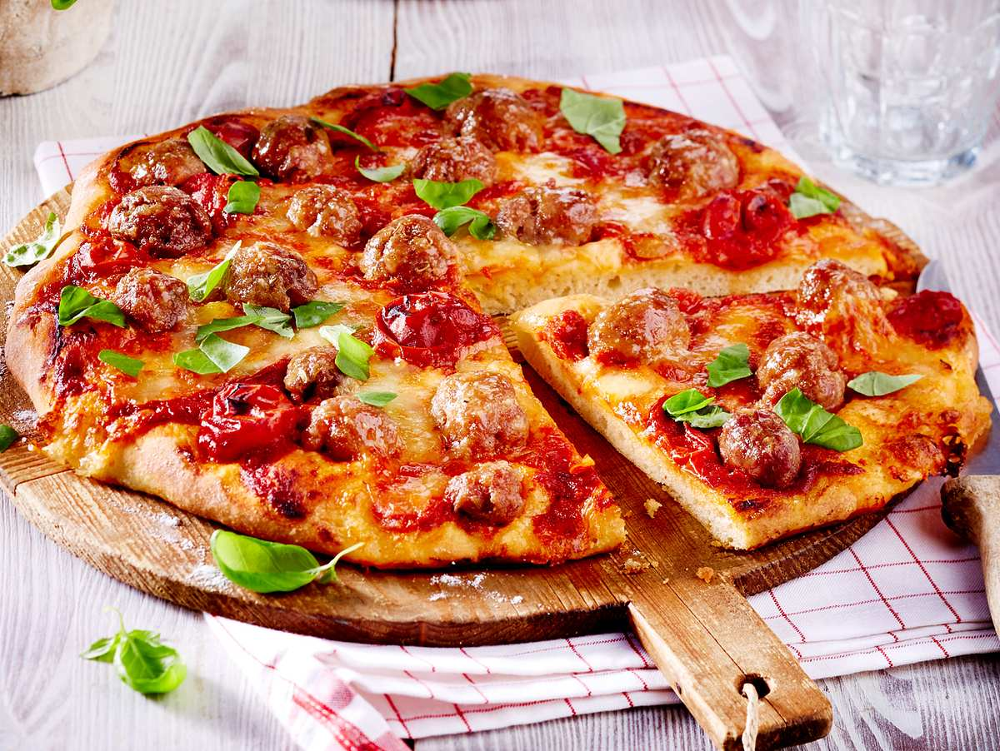

Salsiccia-Pizza Rezept

Beschreibung
Salsiccia-Pizza "Tomate-Mozzarella"
Zutaten
- ¼ Würfel Hefe
- ½ TL Zucker
- 250 g Mehl
- 1 TL Salz
- 1 Ei (Gr. M)
- 1 Knoblauchzehe
- 2 TL Olivenöl
- 1 Dose(n) (400 g) Kirschtomaten
- Salz
- Pfeffer
- 3 (à ca. 100 g) Salsiccia (italienische Fenchelbratwurst)
- 2 Mozzarellakäse (à ca. 125 g)
- Basilikum zum Garnieren
- Mehl für die Arbeitsfläche
Zubereitung
-
Hefe und Zucker in 125 ml lauwarmen Wasser verrühren. Mehl, Salz und
Ei in eine Schüssel geben. Hefe-Wasser dazugießen. Mit den Knethaken
des Handrührgerätes bei langsamer Geschwindigkeit verkneten. Auf
höchster Stufe ca. 10 Minuten weiterkneten.
-
Teig mit einem Tuch abdecken und an einem warmen Ort ca. 1 Stunde
gehen lassen.
-
Inzwischen Knoblauch schälen, klein schneiden. Öl in einem Topf
erhitzen, Knoblauch darin andünsten. Tomaten zugeben und 10–15 Minuten
köcheln lassen. Vom Herd nehmen, mit Salz und Pfeffer abschmecken und
ca. 30 Minuten abkühlen lassen.
-
Wurstbrät aus der Haut drücken. Ca. 40 kleine Bällchen aus dem Brät
formen. Mozzarella abtropfen lassen und zerzupfen. Teig halbieren,
eine Teighälfte auf einer bemehlten Arbeitsfläche rund (ca. 26 cm Ø)
ausrollen.
-
Teig auf ein mit Backpapier belegtes Backblech legen und mit ca. der
Hälfte Tomatensoße bestreichen. Jeweils ca. die Hälfte Hackbällchen
und Mozzarella darauf verteilen. Im vorgeheizten Backofen (E-Herd: 250
°C/Umluft: 225 °C) 10–12 Minuten backen.
-
Inwischen mit den übrigen Zutaten ebenso eine zweite Pizza herstellen.
Erste Pizza aus dem Ofen nehmen, mit frischem Basilikum garnieren. In
Stücke schneiden und anrichten. Zweite Pizza bei gleicher Temperatur
ebenfalls 10–12 Minuten backen.